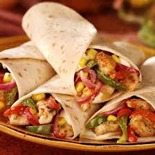

Butter Chicken

- 1 kg Rundvlees
- 300 g maîs
- 2 teentjes knoflook
- 50 g paprika
- 2 verse paprikas
- 100g rode bonnen
- 200 g geperste tomaten
- Wraps.
Bereiding
- Snij je paprika's fijn en haal de water uit u maîs en bonnen.
- In een hete pan zet je u rundvlees zonder extra vet toe te voegen.
- Kook het vlees goed door en zet de rest van de ingredienten erbij.
- Laat alles samen koken en zet de geperste tomaten erbij.
- Verwarm enkele wraps en geniet.